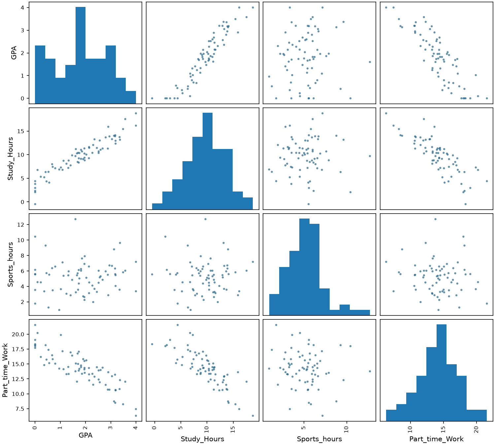
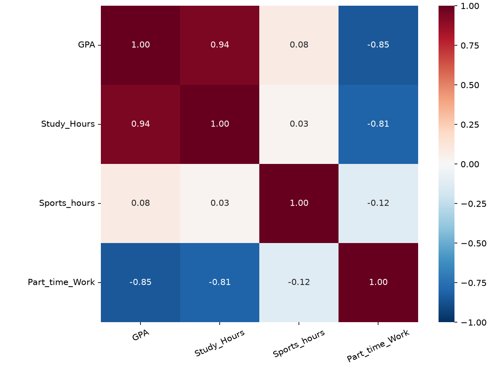
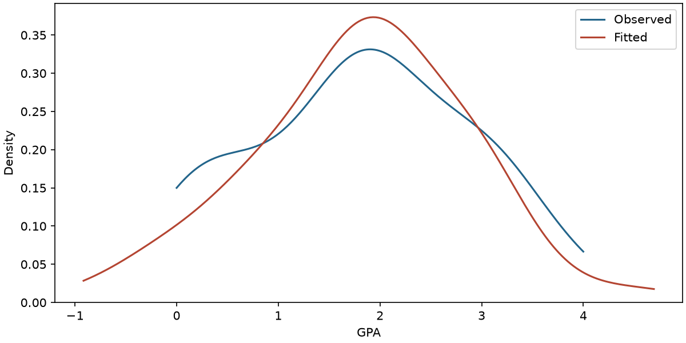
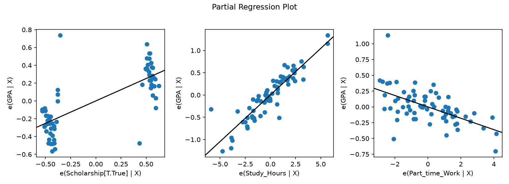

重回帰分析と偏回帰係数 / 重回帰分析
単回帰分析では, 説明変数が 1 つの式で出生率と家事・育児時間の割合の関係を表しました. 説明変数が k 個のときは, 回帰式を次のように書きます.
y=\beta_0+\beta_1x_1+\dots+\beta_kx_k+\varepsilon.
このように複数の説明変数, 回帰係数を利用して目的変数を表す回帰分析を重回帰分析といいます. 基本的には, 単回帰と同じように分析することが可能ですが, いくつかの注意点があります.
まず偏回帰係数の読み方を式で確かめ, 架空の学生のデータで, 式に入れる変数によって係数が表す比較がどう変わるかを見ます. 続いて, 質的な変数をダミー変数で表す方法, 係数の単位と標準化, 説明変数どうしの関連が係数の精度に関わる多重共線性を順に扱います.
偏回帰係数とそろえる条件
母集団で, 説明変数の値を指定したときの目的変数の平均を線形式で表します. この平均を m(x_1,\dots,x_k) と書きます.
m(x_1,\dots,x_k)=\beta_0+\beta_1x_1+\dots+\beta_kx_k.
第 j 説明変数だけが 1 違い, 他の説明変数が同じ 2 つの条件を比べます. 切片と第 j 説明変数以外の項が差し引かれるので, 式が表す平均の差は次のようになります.
m(x_1,\dots,x_j+1,\dots,x_k)-m(x_1,\dots,x_j,\dots,x_k)=\beta_j.
重回帰式の各説明変数に付く係数を偏回帰係数と呼びます. 線形の重回帰式では, 他の説明変数が同じ個体どうしで, その説明変数が 1 単位違うときの, 式が表す平均の差です.
架空の学生のデータは, 次の仕組みで作っています. 奨学生のときに 1, 非奨学生のときに 0 をとる変数を x_1, 週あたりの勉強時間を x_2, 週あたりのアルバイト時間を x_3 とします. まず, 学生ごとに潜在得点 y^\ast を次の式で作ります.
y^\ast = 0.5 + 0.6 x_1 + 0.25 x_2 - 0.1 x_3 + \varepsilon^\ast.
\varepsilon^\ast は学生ごとに独立に加える, 平均 0, 標準偏差 0.1 の正規分布の乱数です. 観測する GPA は, 潜在得点が 0 未満なら 0, 4 より大きければ 4 とし, その間では潜在得点と同じ値にします. この操作を打ち切りと呼びます. 打ち切りのため, 観測 GPA の条件つき平均は直線になりません. 例えば潜在得点が 4 を超えやすい条件では, 観測 GPA の平均は 4 に近づきます. そのため, 観測 GPA に当てはめた式の係数は, 潜在得点の式の係数とは異なります.
勉強時間だけを使う単回帰では, 勉強時間の異なる学生どうしを比べます. 奨学生区分やアルバイト時間も候補にすると, 何を式に加えるかで, 比べる学生の条件が変わります. 平均 GPA の差を求めるときは, どの条件が同じ学生を比べたいかで式を決めます. 新しい学生への予測や次に確かめる仮説の探索では, 目的ごとの変数の選び方を使います.
観測 GPA を目的変数とし, x_1, x_2, x_3 をすべて入れた重回帰式で平均 GPA を近似します.
m(x_1,x_2,x_3)=\beta_0+\beta_1x_1+\beta_2x_2+\beta_3x_3.
奨学生区分とアルバイト時間をそろえて, 勉強時間だけ週 1 時間長い学生との平均 GPA の差を式で求めます.
m(x_1,x_2+1,x_3)-m(x_1,x_2,x_3)=\beta_2.
アルバイト時間を式に入れる場合と入れない場合
この仕組みで作った架空の学生 20 万人分の観測 GPA に, 奨学生区分と勉強時間を共通に含む 2 つの式を当てはめました. 表の数値は, 架空の母集団での最小二乗係数の近似です.
| 式に入れる説明変数 | 式が表す平均 GPA の近似 | 勉強時間の係数が表す比較 |
|---|---|---|
| 奨学生区分, 勉強時間, アルバイト時間 | 0.684+0.531x_1+0.219x_2-0.088x_3 | 奨学生区分とアルバイト時間が同じ学生どうし. 勉強時間が週 1 時間長い学生ほど, 平均 GPA は式の上で約 0.219 高い |
| 奨学生区分, 勉強時間 | -1.069+0.531x_1+0.272x_2 | 奨学生区分が同じ学生どうし. アルバイト時間には条件を付けない. 勉強時間が週 1 時間長い学生ほど, 平均 GPA は式の上で約 0.272 高い |
次の図は, 表の 2 つの係数の違いを, 奨学生区分を固定し, アルバイト時間で学生を 3 つの層に分けて描いた模式図で, 点は実データではありません. この架空のデータでは, アルバイト時間が長い学生ほど勉強時間が短い傾向があります (散布図は学習用データの散布図と相関にあります). また, 表の 1 行目のアルバイト時間の係数が負なので, 同じ勉強時間ならアルバイト時間が長いほど平均 GPA は低くなります. 層の中に引いた直線の傾きはアルバイト時間をそろえた比較にあたり, 表の 1 行目の勉強時間の係数に対応します. 層を区別せずに 1 本の直線を引くと, 勉強時間の長い学生にはアルバイト時間の短い学生が多いので, アルバイト時間の違いによる平均 GPA の差も傾きに入ります. その結果, 傾きは層の中の傾きより大きくなり, これが表の 2 行目の勉強時間の係数にあたります.

例えば, 同じ奨学生区分で週 10 時間と週 11 時間勉強する学生を比べます. 両方のグループを週 14 時間アルバイトする学生にそろえるなら, 使うのは表の 1 行目の式です. アルバイト時間を問わずに週 10 時間と週 11 時間の学生を比べるなら, 表の 2 行目の式を使います. どちらの係数を報告するかは, どの条件をそろえた比較が知りたいかで決まります.
「勉強時間を増やせば GPA が上がる」という因果の主張をするには, 入れる変数を因果の関係についての仮定から決める必要があります. 学生に勉強時間を増やす介入をした場合にどうなるかは, 因果推論で扱います.
推測に使う説明変数は, どの条件をそろえるかという問いに沿って, データを見る前に決めます.
後退消去などのステップワイズ法で同じデータから変数を選んでから区間や P 値を通常の方法で計算すると, 選択の手順が計算に入らず, 予定した被覆率や有意水準を保てないことがあります.
表の 2 つの式には, いずれも奨学生区分が入っています. この区分を表す x_1 の係数は, どの学生どうしの平均 GPA の差にあたるでしょうか.
奨学生区分を表すダミー変数
質的な変数の区分を表すために, その区分に該当すれば 1, 該当しなければ 0 を入れる変数をダミー変数と呼びます. 例えば, 奨学生区分を表す x_1 では, 奨学生に 1, 比較の基準となる非奨学生に 0 を割り当てています.
偏回帰係数とそろえる条件で求めた, アルバイト時間を含む式に x_1=0 と x_1=1 をそれぞれ入れます. 同じ勉強時間を x_2, 同じアルバイト時間を x_3 とすると, 2 つの区分の式は次のとおりです.
\begin{aligned} m(0,x_2,x_3)&=0.684+0.219x_2-0.088x_3, \\ m(1,x_2,x_3)&=0.684+0.531+0.219x_2-0.088x_3. \end{aligned}
勉強時間とアルバイト時間が同じなら, 奨学生の平均 GPA は非奨学生より式の上で約 0.531 高いと読みます. この式では両区分で勉強時間とアルバイト時間の傾きが共通なので, 時間をどこでそろえても, 式が表す区分間の差は一定です.
0 と 1 の割り当てを反対にすると, 基準が奨学生になります. 非奨学生と奨学生を引く順序も反対になるので, 対応する係数は約 -0.531 です. 学生ごとの当てはめ値は, 割り当てと式をそろえて変更すれば同じです.
質的な説明変数をダミー変数で表し, 量的な目的変数を線形回帰で当てはめる方法は数量化 1 類と対応します. 例えば, 勉強方法を 3 区分で記録した学生 3 人のデータを考えます. 左の 4 列が変換前で, 右の 3 列が変換で得たダミー変数です.
| GPA (点) | 勉強時間 (時間) | 奨学生区分 | 勉強方法 | 奨学生 | グループ学習 | 個別指導 |
|---|---|---|---|---|---|---|
| 2.0 | 8 | 非奨学生 | 自習 | 0 | 0 | 0 |
| 2.4 | 10 | 奨学生 | グループ学習 | 1 | 1 | 0 |
| 1.8 | 7 | 非奨学生 | 個別指導 | 0 | 0 | 1 |
勉強方法の 3 区分それぞれにダミー変数を作ると, 3 列の和が全員について 1 となり, 切片の列と重なります. そこで自習を基準としてその列を省きます. グループ学習と個別指導の係数は, それぞれ自習との平均 GPA の差を表します.
係数の単位と標準化
偏回帰係数を読むときは, 説明変数の 1 単位がどれだけの差にあたるかを確かめます. 例えば, 3 つの説明変数をそれぞれ mm, m, % で測ると, 1 単位の意味が異なるため, 係数の数値をそのまま比べることはできません.
架空の学生の例では, 勉強時間の係数 0.219 の単位は, 週 1 時間あたりの GPA の差です. 勉強時間を週あたりの分数で記録し直すと, 同じ比較は週 60 分の差で表せるため, 係数は 0.219/60 になります. アルバイト時間や GPA の記録を変えなくても, 勉強時間の単位を変えれば勉強時間の係数の数値は変わります.
標準偏差を単位にする
それぞれの変数が典型的にばらつく幅を基準に比較するには, 標準化を使えます. 変数 x_j の観測値 x_{ij} から標本平均 \bar x_j を引き, その変数の標本標準偏差 s_{x_j} で割ります.
z_{ij}=\frac{x_{ij}-\bar x_j}{s_{x_j}}.
標準偏差が正なら, 標準化した変数の平均は 0, 標準偏差は 1 です. 勉強時間だけを標準化し, GPA は元の単位で当てはめると, 勉強時間の係数は「勉強時間が 1 標準偏差違う学生間での GPA の差」を表します. GPA も標準化すると, GPA の差も GPA の標準偏差を単位として表します.
勉強時間とアルバイト時間を標準化すると, それぞれが 1 標準偏差違うときの平均の差を比べられます. 標準偏差は学生をどこから選ぶかで変わるので, 標準化した係数を報告するときは, どの集団のばらつきを基準にしたかも示します. 週何時間の差に対して GPA がどれだけ違うかを述べるには, 元の単位の係数が対応します. 奨学生区分のようなダミー変数を 0 と 1 のまま使えば, 係数を区分間の差として読めます.
最小値と最大値で範囲をそろえる
最小最大変換では, 学習用データの x_j の最小値 a_j と最大値 b_j を使います. 平均と標準偏差を使う標準化に対して, 次の式は学習用データの値を 0 から 1 の範囲にそろえます.
u_{ij}=\frac{x_{ij}-a_j}{b_j-a_j} \qquad (a_j<b_j).
最小値と最大値が等しい列では分母が 0 になります. 勉強時間とアルバイト時間の標準化で使う MinMaxScaler は, この場合に学習用の値をすべて 0 にします.
最小値と最大値が異なる列では, 新しいデータにも同じ式を使うと, 学習用の範囲を外れる値は 0 未満や 1 超になります.
多重共線性と係数の精度
偏回帰係数を精度よく求めるには, 他の説明変数をそろえた範囲でも, 関心のある説明変数の値にばらつきが必要です. ある説明変数 x_i が, 定数 \alpha_j を使って他の説明変数の線形式で近似できるとき, 多重共線性があるといいます.
x_i\approx\sum_{j\neq i}\alpha_jx_j.
この近似がよく当てはまるほど, 他の説明変数をそろえたときに残る x_i のばらつきは小さくなり, 回帰係数の推定値は標本によって大きく変わることがあります. 説明変数が 3 つ以上なら, 変数を 2 つずつ比べるだけでは見つからない場合もあります.
例えば, 勉強時間とアルバイト時間に強い関連があると, アルバイト時間が近い学生の間で勉強時間に残る差は小さくなります.
分散拡大係数と区間の幅
勉強時間のばらつきのうち, 奨学生区分とアルバイト時間でどれだけ当てはめられるかを調べます. 勉強時間を目的変数, 残りの説明変数を説明変数にした切片つきの回帰を行い, その決定係数を R_2^2 とします. R_2^2 が 1 に近いほど, 他の変数をそろえた後に勉強時間に残るばらつきが小さくなります. この回帰を補助回帰と呼びます.
一般に, 第 j 説明変数の補助回帰の決定係数を R_j^2 とすると, 分散拡大係数 (VIF) は次の式で求められます.
\mathrm{VIF}_j = \frac{1}{1-R_j^2}.
線形回帰で誤差が等分散の場合, 他の説明変数をそろえた後に残る x_j の二乗和は, x_j 全体の平均まわりの二乗和の 1-R_j^2 倍です. 係数の分散はこの残った二乗和に反比例します. 誤差分散と x_j 全体の散らばりが同じ場合を比べると, 他の説明変数と無相関の場合に比べて, 係数の分散は \mathrm{VIF}_j 倍, 標準誤差は \sqrt{\mathrm{VIF}_j} 倍になります. 残差の自由度も同じなら, 同じ信頼水準の区間の幅も \sqrt{\mathrm{VIF}_j} 倍になります.
架空の学生 20 万人の例で, アルバイト時間を含む式の勉強時間の VIF は約 2.45 でした. 他の条件を同じとした場合の標準誤差の倍率は約 1.56 です. 実際に説明変数を出し入れすると, 残差の分散や係数が表す比較も変わります. 区間の幅は各式で求め, 比べた条件と一緒に報告します. 例えば, アルバイト時間を固定した比較が問いなら, アルバイト時間も式に入れ, 勉強時間の係数をその信頼区間の幅とともに報告します.
新しい学生の GPA を予測する場合は, アルバイト時間を予測時に得られるかを確かめます. 利用できるなら, アルバイト時間を含む式と外した式を, 検証用データでの予測誤差で比べられます. 信頼区間の幅は勉強時間の係数をどれだけ精密に推定できたかを表し, 検証誤差は新しい学生の GPA をどれだけ正確に予測できるかを表します.
完全な多重共線性で係数が一つに決まらない場合
ある説明変数 x_i が, 他の説明変数の線形式
x_i=\sum_{j\neq i}\alpha_jx_j
で正確に表せるとき, 完全な多重共線性があるといいます. 線形式には定数項を含めても構いません. このとき, 最小二乗法では関係する説明変数の係数を一つずつ決めることはできません.
例えば, 勉強時間を時間単位と分単位の 2 列で記録したとします. 時間単位を x, 分単位を z とすると, 全員について z=60x が成り立ちます.
a+b x+c z=a+(b+60c)x.
勉強時間にばらつきがあれば, 当てはめで定まるのは, 2 つの係数の組み合わせ b+60c です. 例えば b=0.24, c=0 と, b=0, c=0.004 は, 同じ当てはめ値を与えます. どちらも b+60c=0.24 なので, 当てはめから b と c を一つずつ求めることはできません. 時間と分は同じ量を表すので, 週 1 時間の差を問う場合は時間の列だけで式を作れます.
重回帰分析では, 同じ仕組みで作った架空の学生 100 人のデータで, 奨学生区分とアルバイト時間をそろえたときの勉強時間と GPA の関係を推定し, ここで見た偏回帰係数, ダミー変数, 標準化, 多重共線性を確かめます.
演習
Exercise REG-MULTIPLE-1
アルバイト時間と奨学生区分をそろえる比較
式 m(x_1,x_2,x_3)=0.684+0.531x_1+0.219x_2-0.088x_3 を使います. 勉強時間が週 2 時間違う学生を比べるとき, 式の上での平均 GPA の差はいくつですか. どの条件をそろえるかも答えてください. 次に, 奨学生かどうかを比べるときの条件と平均 GPA の差を答えてください.
回答
勉強時間の比較では, 奨学生区分と週あたりのアルバイト時間をそろえます. 勉強時間が週 2 時間長い学生の方が, 式の上での平均 GPA が 2\times 0.219=0.438 高くなります. 奨学生かどうかの比較では, 勉強時間とアルバイト時間をそろえます. 奨学生の方が, 式の上での平均 GPA が 0.531 高くなります.
Exercise REG-MULTIPLE-2
合計時間を加えたときの係数
週あたりの勉強時間を x_2, アルバイト時間を x_3 とします. この 2 列に合計時間 u=x_2+x_3 を加え, 式 a+b x_2+c x_3+d u で GPA を当てはめます. b,c,d は一つずつ決まりますか. u に x_2+x_3 を代入して答えてください.
回答
代入すると, 式は a+(b+d)x_2+(c+d)x_3 になります. d に任意の値を加え, b と c から同じ値を引いても, 当てはめ値は同じです. 合計時間は勉強時間とアルバイト時間の和なので, 完全な多重共線性があります. b,c,d を一つずつ決めるには, データの当てはめ以外の条件が必要です.
重回帰分析
重回帰分析と偏回帰係数では, 架空の学生の母集団で, 式に入れる変数によって勉強時間の係数が表す比較が変わることを見ました. ここでは同じ仕組みで作った架空の学生 100 人のデータで, 実際に重回帰式を求めます.
奨学生かどうかと週あたりのアルバイト時間が同じ学生どうしで, 週あたりの勉強時間が 1 時間違うと, 平均 GPA はどれだけ違うでしょうか.
合成 GPA の学習用データ
回帰式を当てはめた学生と, 新しい学生への予測を評価する学生を, データを読む段階で分けます. 学習用の学生について GPA と時間の関係を図で確かめ, 奨学生区分を 0 と 1 で式に入れます. 勉強時間が週 1 時間違う場合の平均 GPA の差を係数から求め, 式が学習用の GPA をどの範囲でよく表すかを図で確かめます.
この CSV には, 偏回帰係数とそろえる条件で述べた仕組みで作った架空の学生 100 人分のデータが入っています. 奨学生区分は質的変数で, GPA と 3 種類の時間は量的変数です.
| 列 | 内容 |
|---|---|
GPA |
GPA (0〜4 点) |
Scholarship |
奨学生かどうか (True または False) |
Study_Hours |
週あたりの勉強時間 (時間) |
Part_time_Work |
週あたりのアルバイト時間 (時間) |
Sports_hours |
週あたりの運動時間 (時間) |
CSV をダウンロードしてコードと同じフォルダに置き, そのフォルダからコードを実行してください.
先頭列は CSV の保存時に書き出された行番号です.
index_col=0 で行のインデックスとして読み込みます.
import matplotlib.pyplot as plt
import pandas as pd
import seaborn as sns
import statsmodels.formula.api as smf
from sklearn.model_selection import train_test_split
from sklearn.preprocessing import MinMaxScaler, StandardScaler
from statsmodels.graphics.regressionplots import plot_partregress_grid
from statsmodels.stats.outliers_influence import variance_inflation_factor
df = pd.read_csv("multiple_regression.csv", index_col=0)
train, test = train_test_split(df, test_size=0.3, random_state=0)
print(f"Training: {len(train)}, held out: {len(test)}")Training: 70, held out: 30読み込んだ直後に最終評価用の 30 人を取り分けます.
random_state=0 は分割を再現するための指定です.
残った 70 人 (train) で図と表を作り, 回帰式を求めます.
学習用データの先頭 4 行を表示します. 1 行が学生 1 人に対応し, 左端の数字は元の行番号です.
print(train.head(4).to_string(float_format=lambda value: f"{value:.2f}")) GPA Scholarship Study_Hours Sports_hours Part_time_Work
60 0.45 True 4.34 5.72 15.74
80 3.37 True 13.16 9.63 12.30
90 0.00 False 3.80 3.54 17.70
68 1.82 False 11.03 6.03 14.48学習用データの散布図と相関
まず, 学習用の 70 人について散布図行列を描き, 変数の組み合わせごとの特徴を調べます. 散布図行列では, 行の変数が縦軸, 列の変数が横軸です. 対角線上のヒストグラムには, 各変数の分布が出ます. 奨学生区分は質的変数なので, 散布図行列の軸には GPA と 3 種類の時間を使います.
numeric_columns = ["GPA", "Study_Hours", "Sports_hours", "Part_time_Work"]
fig, axes = plt.subplots(4, 4, figsize=(10, 9), layout="constrained")
pd.plotting.scatter_matrix(
train[numeric_columns],
ax=axes,
diagonal="hist",
range_padding=0.12,
color="#23658b",
alpha=0.7,
)
plt.show()
plt.close(fig)
最上段は GPA が縦軸です. 勉強時間との散布図は右上がり, アルバイト時間との散布図は右下がりです. 次に, 2 段目の右端で勉強時間とアルバイト時間の関係を見ます. アルバイト時間が長い学生ほど勉強時間が短い傾向があります. 勉強時間がアルバイト時間をそろえた学生の間でどれだけばらつくかは, 学習用データの分散拡大係数で調べます.
対角線では GPA が 2 点手前で最も多く, 0 点付近にも集まりがあります. GPA には 0 点と 4 点での打ち切りがあり, 棒の幅や区切り方によっても山の見え方が変わります. 勉強時間とアルバイト時間は中心付近に集まり, 運動時間の分布は長い時間の側に裾を引いています. 勉強時間を正規分布から生成したため, 学習用データには勉強時間が約 -0.48 時間の架空の学生が 1 人います. 図と回帰では配布版の値をそのまま使います.
散布図で見た関係の向きと強さを数値で比べるために, corr() で量的変数どうしの Pearson の相関係数を求めます.
ヒートマップでは負の相関を青, 正の相関を赤で表します.
correlations = train[numeric_columns].corr()
fig, ax = plt.subplots(figsize=(8, 6), layout="constrained")
sns.heatmap(
correlations,
ax=ax,
vmin=-1,
vmax=1,
center=0,
cmap="RdBu_r",
annot=True,
fmt=".2f",
square=True,
)
ax.tick_params(axis="x", labelrotation=25)
ax.tick_params(axis="y", labelrotation=0)
plt.show()
plt.close(fig)
GPA との相関係数は, 勉強時間が約 0.94, アルバイト時間が約 -0.85, 運動時間が約 0.08 です. 時間どうしでは, 勉強時間とアルバイト時間の相関係数が約 -0.81 です. 各相関係数は, 他の条件をそろえずに学習用データ全体で 2 変数の関係を測った値です. 重回帰式で勉強時間の係数を読むときは, 奨学生区分とアルバイト時間をそろえます.
奨学生かどうかで層別した分布
全体の GPA のヒストグラムでは, 0 点付近にも集まりがありました. この集まりは, 奨学生と非奨学生のどちらにも見られるでしょうか. 記録した変数のうち質的変数は奨学生区分だけです. 同じ 70 人を奨学生かどうかで層別し, 散布図行列で GPA の低い範囲と高い範囲の分布を色分けして比べます. ペアプロットの対角線では, 2 群それぞれのヒストグラムを重ねます.
groups = sns.pairplot(
train[[*numeric_columns, "Scholarship"]],
hue="Scholarship",
diag_kind="hist",
palette="Set2",
diag_kws={"bins": 8},
plot_kws={"alpha": 0.7},
height=2.2,
)
plt.show()
plt.close(groups.figure)
GPA の 0 点付近にも 3 点台にも両群の学生がいます. 0 点付近の棒は非奨学生の方が高く, 3 点台の棒は奨学生の方が高くなっています. 勉強時間, 運動時間, アルバイト時間の分布も, それぞれ両群で重なっています.
GPA と 3 種類の時間との相関を比べると, 勉強時間との関係が最も強そうです. この 2 変数に絞り, 奨学生かどうかで点の位置や値の分布がどう違うかを詳しく見ます. ジョイントプロットでは, 中央に散布図, 上に勉強時間のヒストグラム, 右に GPA のヒストグラムを表示します.
joint = sns.JointGrid(
data=train,
x="Study_Hours",
y="GPA",
hue="Scholarship",
palette="Set2",
height=6,
)
joint.plot_joint(sns.scatterplot, alpha=0.75)
joint.plot_marginals(sns.histplot, bins=8)
plt.show()
plt.close(joint.figure)
散布図ではどちらの群でも, 勉強時間の長い学生ほど GPA が高い傾向があります. 両群で勉強時間が重なる範囲のうち, 例えば週 10 時間前後では, 奨学生の点は縦方向に高い位置に多くあります. この散布図での比較には, アルバイト時間の異なる学生も含まれます. アルバイト時間と奨学生区分もそろえて勉強時間の違いを比べるには, 奨学生区分を式の中でどう表せばよいでしょうか.
重回帰の係数と信頼区間
奨学生かどうかとアルバイト時間をそろえて勉強時間の違いを比べるために, GPA ~ Scholarship + Study_Hours + Part_time_Work の式を使います.
運動時間も記録されていますが, 問いでそろえる条件に含めていないため, 式には入れません.
データを見て変数を選ぶ手順はモデル選択で扱います.
奨学生かどうかは, 奨学生なら 1, それ以外なら 0 のダミー変数で表せます.
get_dummies で変換を確かめます.
drop_first=True にすると, 基準の False の列が省かれます.
scholarship_indicator = pd.get_dummies(
train["Scholarship"],
prefix="Scholarship",
drop_first=True,
dtype=int,
)
scholarship_preview = train[["Scholarship"]].join(scholarship_indicator).head(4)
print(scholarship_preview.to_string())
print(scholarship_indicator["Scholarship_True"].value_counts().sort_index().to_string()) Scholarship Scholarship_True
60 True 1
80 True 1
90 False 0
68 False 0
Scholarship_True
0 38
1 32smf.ols に渡す式の文字列では, ~ の左に目的変数, 右に説明変数の列名を指定します. 切片は自動で入ります.
smf.ols は, 配布データの真偽値の列をカテゴリとして扱い, False を基準にします.
係数表ではダミー変数の行が Scholarship[T.True] になります.
fit() で係数を求め, conf_int(alpha=0.05) で各係数の 95% 信頼区間を取り出します.
formula = "GPA ~ Scholarship + Study_Hours + Part_time_Work"
result = smf.ols(formula, data=train).fit()
intervals = result.conf_int(alpha=0.05)
coefficient_table = pd.DataFrame(
{
"estimate": result.params,
"lower": intervals[0],
"upper": intervals[1],
}
)
print(coefficient_table.to_string(float_format=lambda value: f"{value:.3f}")) estimate lower upper
Intercept 0.836 0.194 1.479
Scholarship[T.True] 0.504 0.398 0.610
Study_Hours 0.209 0.185 0.233
Part_time_Work -0.090 -0.121 -0.060Study_Hoursは約 0.209 です. 奨学生かどうかとアルバイト時間が同じ学生どうしでは, 週あたりの勉強時間が 1 時間長い学生の平均 GPA が約 0.209 点高いと推定されます.Part_time_Workは -0.090 です. 奨学生かどうかと勉強時間が同じ学生どうしでは, 週あたりのアルバイト時間が 1 時間長い学生の平均 GPA が約 0.090 点低いと推定されます.Scholarship[T.True]は 0.504 です. 勉強時間とアルバイト時間が同じ学生どうしで, 奨学生の平均 GPA から奨学生でない学生の平均 GPA を引いた差を表します.Interceptは 0.836 です. 奨学生でなく, 週あたりの勉強時間とアルバイト時間がともに 0 時間のときの式の値です. 学習用データにはこの条件に該当する学生がいないため, この値は式を観測範囲外に延ばした値です.
表の 95% 信頼区間はいずれも 0 を含みません. 推定値と区間を一緒に報告すると, 差の向きと大きさにどの程度の不確かさがあるかを伝えられます. 母集団に相当するのは, 配布データと同じ仕組みから作られる学生です. 同じ仕組みから別の標本を取れば, 係数と区間も変わります. 区間の読み方と前提は 回帰係数の区間と検定 を参照してください.
切片以外の 3 つの係数がすべて 0 だと仮定すると, どの学生にも同じ平均 GPA を当てはめます. 切片だけの式に比べて, 3 つの変数を含む式で残差平方和がどれだけ減るかを F 検定で評価します.
print(f"Adjusted R-squared: {result.rsquared_adj:.3f}")
print(f"F({result.df_model:.0f}, {result.df_resid:.0f}): {result.fvalue:.2f}")
print(f"P value: {result.f_pvalue:.2e}")Adjusted R-squared: 0.959
F(3, 66): 537.65
P value: 2.67e-46説明変数の数を考慮した調整済み決定係数は 0.959 です. これは学習用の 70 人への当てはまりを要約した値です. F 検定の前提のもとで, 3 つの係数がすべて 0 のときに今回以上の F 値が出る確率は, 約 2.67\times 10^{-46} です. 各係数の差の大きさと不確かさは, 係数表の推定値と信頼区間で読みます.
アルバイト時間を式から外した比較
アルバイト時間を含まない式を, 同じ学習用の 70 人で当てはめます.
reduced = smf.ols("GPA ~ Scholarship + Study_Hours", data=train).fit()
study_comparison = pd.DataFrame(
{
"With part-time work": coefficient_table.loc["Study_Hours"],
"Without part-time work": {
"estimate": reduced.params["Study_Hours"],
"lower": reduced.conf_int(alpha=0.05).loc["Study_Hours", 0],
"upper": reduced.conf_int(alpha=0.05).loc["Study_Hours", 1],
},
}
).T
print(study_comparison.to_string(float_format=lambda value: f"{value:.3f}")) estimate lower upper
With part-time work 0.209 0.185 0.233
Without part-time work 0.267 0.249 0.284アルバイト時間を入れた式の約 0.209 点は, 奨学生かどうかとアルバイト時間をそろえた比較です. アルバイト時間を外した式の約 0.267 点では, 奨学生かどうかだけをそろえるので, 勉強時間が異なる学生の間でアルバイト時間も異なりえます. どの変数をそろえた比較になるかは 重回帰分析と偏回帰係数 で扱います.
VIF と係数の区間
result.model.exog は, 切片用の定数列と説明変数を並べた行列です.
各説明変数の分散拡大係数 (VIF) を計算します.
design = result.model.exog
predictor_names = result.model.exog_names
for column, name in enumerate(predictor_names):
if name != "Intercept":
vif = variance_inflation_factor(design, column)
print(f"{name:20s} {vif:.2f}")Scholarship[T.True] 1.01
Study_Hours 2.92
Part_time_Work 2.92勉強時間とアルバイト時間の VIF はどちらも約 2.92 です. 他の条件を一定とすると, VIF が大きいほど係数の標準誤差が大きくなり, 信頼区間も広がります.
学習用データへの当てはまり
70 人の実測の GPA と, 同じ 70 人を使って求めた式による当てはめ値を比べます. 実測値と当てはめ値が一致する場所を破線で描きます. 軸は同じ尺度にし, 式の値が 0〜4 の範囲から出る場合も表示します.
observed = train["GPA"]
fitted = result.fittedvalues
limits = (
min(0, fitted.min()) - 0.1,
max(4, fitted.max()) + 0.1,
)
fig, ax = plt.subplots(figsize=(6, 6), layout="constrained")
ax.scatter(fitted, observed, color="#23658b", alpha=0.75)
ax.plot(limits, limits, color="#b44532", linestyle="--", label="Exact fit")
ax.set(
xlabel="Fitted GPA",
ylabel="Observed GPA",
xlim=limits,
ylim=limits,
aspect="equal",
)
ax.legend()
ax.grid(alpha=0.25)
plt.show()
plt.close(fig)
破線からの縦のずれが, 各学生の実測値と当てはめ値の差です. 2 点付近では多くの点が破線の近くにあります. 実測が 0 点付近の点は縦のずれの向きも大きさもさまざまで, 右端には実測の 4 点を上回る当てはめ値があります. 新しい学生への予測誤差は, 同じ式を回帰式の当てはめに使わなかったデータに適用して測ります.
散布図では学生ごとに実測値と当てはめ値を比べました. 次に, 回帰式が学習用の GPA の分布をどの程度表せているかを確かめるため, 実測値と当てはめ値の密度を重ね, 値が集まる範囲や裾の広がりを比べます. 実測値の曲線は 0〜4 点の範囲で描きます.
fig, ax = plt.subplots(figsize=(8, 4), layout="constrained")
sns.kdeplot(observed, ax=ax, clip=(0, 4), cut=0, label="Observed", color="#23658b")
sns.kdeplot(fitted, ax=ax, cut=0, label="Fitted", color="#b44532")
ax.set(xlabel="GPA", ylabel="Density")
ax.legend()
plt.show()
plt.close(fig)
2 本の曲線はいずれも 2 点付近に山があります. 当てはめ値の山は実測値より高く, 裾は実測 GPA の範囲である 0〜4 点の外にも伸びています. 各学生の GPA を式が過大に見積もったか, 過小に見積もったかは, 当てはめ値と実測値の散布図で破線の上下を見て確かめます.
当てはめ値からは式全体の当てはまりを確かめられます. 個々の説明変数が GPA とどう関係するかは, 偏回帰プロット (Added-Variable Plot) で確かめます. 調べたい説明変数を 1 つ選び, 残りの説明変数を使って次の 2 つの回帰を行います.
- 横軸には, 選んだ説明変数を残りの説明変数で回帰したときの残差をとります.
- 縦軸には, GPA を同じ残りの説明変数で回帰したときの残差をとります.
図の直線の傾きは, 重回帰式での各説明変数の係数になります.
fig = plt.figure(figsize=(11, 4))
plot_partregress_grid(
result,
exog_idx=["Scholarship[T.True]", "Study_Hours", "Part_time_Work"],
grid=(1, 3),
fig=fig,
)
fig.subplots_adjust(top=0.84)
plt.show()
plt.close(fig)
係数表に対応して, 中央の勉強時間の直線は傾きが約 0.209 で右上がり, 右のアルバイト時間の直線は約 -0.090 で右下がりです. 時間の係数は週 1 時間あたりの GPA の差を表し, 左の奨学生区分の係数は 0 と 1 の区分間の GPA の差を表します.
勉強時間とアルバイト時間の標準化
勉強時間とアルバイト時間の係数を, それぞれの時間のばらつきを基準に比べたいときは,
学習用データで 2 列を標準化できます.
StandardScaler は学習用データの平均を引き, 標準偏差で割ります.
奨学生かどうかと GPA は元の尺度で残します.
hours = ["Study_Hours", "Part_time_Work"]
standardized = train.copy()
standardized[hours] = StandardScaler().fit_transform(train[hours])
standardized_result = smf.ols(formula, data=standardized).fit()
standardized_coefficients = standardized_result.params.loc[hours]
print(standardized_coefficients.to_string(float_format=lambda value: f"{value:.3f}"))Study_Hours 0.780
Part_time_Work -0.266奨学生区分とアルバイト時間が同じ学生どうしを比べると, 勉強時間が週 1 時間長い場合の GPA の差は約 0.209 点で, 勉強時間が学習用データの 1 標準偏差だけ長い場合の差は約 0.780 点です. 奨学生区分は 0 と 1 のままなので, その係数に 1 と 0 の差をかけると, そのまま区分間の平均 GPA の差になります.
最小値と最大値を使う変換も, 変換前の学習用データから計算できます.
MinMaxScaler で別のコピーの時間 2 列を変換し, それぞれの最小値と最大値を確かめます.
scaled = train.copy()
scaled[hours] = MinMaxScaler().fit_transform(train[hours])
bounds = scaled[hours].agg(["min", "max"])
print(bounds.to_string(float_format=lambda value: f"{value:.1f}")) Study_Hours Part_time_Work
min 0.0 0.0
max 1.0 1.0学習用データへの当てはまりで見たのは, 係数を求めた 70 人への当てはまりでした. 式を使って新しい学生の GPA を当てる場合に何が変わるかは, 予測とは何かで考えます. 取り分けた評価用の 30 人は, 未使用のデータで予測の誤差を測るで使います.
実際のデータでの事例
実際の研究データでは, 回帰式を当てはめる前のデータの取得・整形・結合が, 分析そのもの以上に重要になることがあります. 例えば, 企業の財務指標と株価を比べるには, 証券コードと決算期を確かめて同じ企業・同じ期の値を組み合わせます.
EDINET API による財務データの取得と回帰分析は, 論文として公表された研究「ESGスコアと財務指標の重回帰分析」のコードをもとにしています. EDINET から上場企業の財務データを取得し, 株価と業種のデータを結合して, 業種と年度をダミー変数に入れた重回帰式を当てはめるまでをたどれます. 回帰分析を研究に使う方には, この資料の変数選択の例も勧めます. 同じデータで P 値の小さい変数を選んでから検定すると, 通常の P 値の計算にはその選択が反映されません.
演習
Exercise REG-GPA-1
アルバイト時間をそろえる場合とそろえない場合
学習用データを使い, アルバイト時間を式に入れた場合と外した場合の勉強時間の係数を求めてください. それぞれ, どの条件が同じ学生どうしの平均 GPA を比べているかを書いてください.
回答
with_work = smf.ols("GPA ~ Scholarship + Study_Hours + Part_time_Work", data=train).fit()
without_work = smf.ols("GPA ~ Scholarship + Study_Hours", data=train).fit()
print(f"With part-time work: {with_work.params['Study_Hours']:.3f}")
print(f"Without part-time work: {without_work.params['Study_Hours']:.3f}")With part-time work: 0.209
Without part-time work: 0.267どちらも週あたりの勉強時間が 1 時間異なる学生どうしの比較です. アルバイト時間を式に入れた場合は奨学生かどうかとアルバイト時間が同じ学生どうしで, 平均 GPA の差は約 0.209 点です. 外した場合は奨学生かどうかが同じ学生どうしで, 平均 GPA の差は約 0.267 点です.